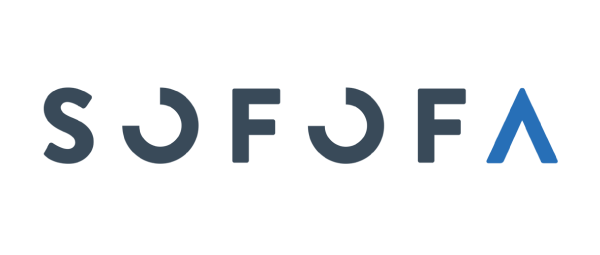
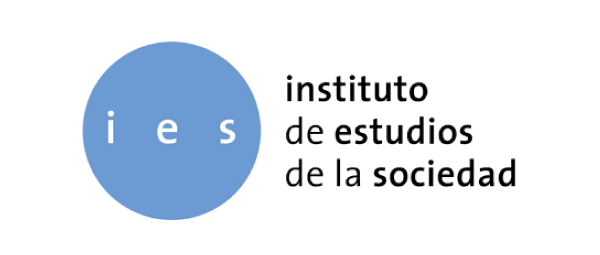

Quiero
contratar
Me gustaría contar con el servicio part-time de un estudiante Universitario.
RegistrarmeQuiero
trabajar
Me gustaria aprovechar mi tiempo libre en el rubro que encaje con mis competencias laborales.
RegistrarmeUn poco de historia...

Beneficios "win win"
Compatible
El empleador puede buscar el perfil compatible con el servicio y los estudiantes compatibilizan el trabajo con sus horarios libres.
Georreferenciado
UWork realiza un cruce entre la ubucacion de la empresa y la residencia del alumno, para optimizar los tiempos de respuesta.
Muy simple
UWork App permite que ambas partes se conecten fácilmente, optimizando tiempo y recursos.
Ya son parte de Uwork:

